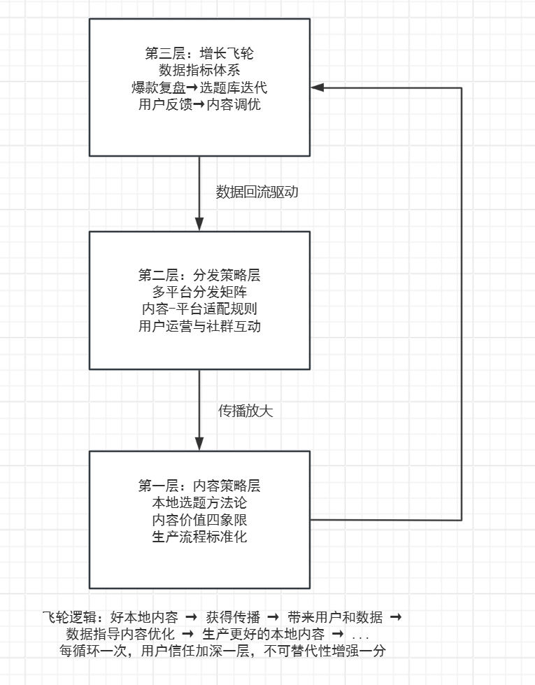

为全国 2000+ 中小型县级融媒体中心设计了一套「轻量级内容运营体系」——以本地关系度为核心的内容-分发-增长飞轮模型，帮助它们在无充足资金、无特殊政策倾斜的条件下，实现可量化的传播效果提升。
产品策略实习生（独立负责）
2023.06 – 2024.06（12 个月，分 4 个阶段）
2018 年习近平总书记提出「扎实抓好县级融媒体中心建设」以来，全国县级融媒体中心挂牌数量已超过 2585 个。2020 年《十四五规划》进一步明确「建强用好县级融媒体中心」。
然而，一个被顶层设计忽视的现实是：在 2585 个挂牌单位中，真正有能力建设「中央厨房」、接入省级云平台、获得专项财政支持的不足 20%。剩余的 2000+ 个中小融媒中心，面临着典型的「资源鸿沟」：
| 资源维度 | 头部融媒（少数） | 中小融媒（大多数） |
|---|---|---|
| 资金 | 年预算千万级以上 | 年预算不足 300 万 |
| 技术 | 自建 / 接入省级云平台 | 无技术团队，靠外包 |
| 人才 | 专职运营团队 30+ 人 | 全员不到 15 人，一人兼多岗 |
| 政策 | 国家级 / 省级试点 | 无特殊倾斜 |
| 变现 | 多元经营，年收入高 | 依赖财政拨款，无自主收入 |
我称这类单位为「中小融媒中心」——它们不是个案，而是行业的沉默大多数。
项目启动时，我带着一个从文献和政策文件里形成的假设：
「中小融媒的核心瓶颈是资源不足——缺钱建平台、缺政策支持、缺技术人才。如果能帮他们争取更多资源，问题就能解决。」
这个假设驱动了我第一阶段的调研方向。
经过初步的案头研究，我将「中小融媒如何提升内容传播效果」拆解为三个子问题：
这三个问题成为我后续调研和分析的核心线索。
我定义了竞品三层圈：
外层 · 标杆参照：浙江长兴传媒集团（县级融媒标杆，年营收过亿）、福建尤溪县融媒中心（以短视频出圈，粉丝 200 万+）
中层 · 间接竞品：本地头部自媒体号（天津本地资讯类抖音 / 公众号）、掌上天津 APP（本地生活服务综合平台）
内层 · 直接竞品：天津市和平区、南开区、河西区融媒体中心——与西青同级同城，资源条件基本一致
| 层级 | 代表 | 关键特征 |
|---|---|---|
| 外层 | 长兴传媒 | 年营收过亿，自建中央厨房 |
| 外层 | 尤溪融媒 | 抖音 200 万粉，轻量化制作 |
| 中层 | 本地自媒体 | 快、近，但无公信力 |
| 中层 | 掌上天津 | 本地生活服务综合平台 |
| 内层 | 和平区融媒 | 公众号为主，18–22 人 |
| 内层 | 南开区融媒 | 客户端+公众号，15–18 人 |
| 内层 | 河西区融媒 | 客户端+网站，14–16 人 |
我对天津市内 4 个区级融媒中心进行了桌面研究 + 内容采样，以下为统一框架下的横向对比：
| 维度 | 西青区 | 和平区 | 南开区 | 河西区 |
|---|---|---|---|---|
| 组织规模 | 12–15 人 | 18–22 人 | 15–18 人 | 14–16 人 |
| 自有平台 | 客户端+公众号 | 公众号为主 | 客户端+公众号 | 客户端+网站 |
| 本地内容占比 | 68% | 41% | 53% | 39% |
| 原创内容率 | 82% | 55% | 67% | 48% |
| 周均发布频次 | 35 篇 | 28 篇 | 32 篇 | 25 篇 |
| 篇均互动量（月） | 1,247 | 683 | 891 | 562 |
| 是否有专职运营 | 有（2 人） | 有（2 人） | 有（3 人） | 无 |
| 接入上级平台 | 津云 | 津云 | 津云 | 津云 |
关键发现：四家融媒在「资金」和「上级平台」这两个变量上基本一致（都接入津云，都依赖区级财政）。但内容传播效果差异显著——西青的篇均互动量是河西区的 2.2 倍。差异的核心变量不是资源，而是本地内容占比和原创率。
| 特征 | 本地自媒体 | 对中小融媒的启示 |
|---|---|---|
| 内容聚焦 | 本地吃喝玩乐、突发事件、情感共鸣 | 选题逻辑：用户关心 > 上级要求 |
| 更新速度 | 部分账号日更 3–5 条 | 速度是优势，但无法长期维持 |
| 互动方式 | 评论区高频互动、私域社群运营 | 融媒可借鉴社群运营模式 |
| 信任背书 | 弱——商业属性导致公信力有限 | 融媒有天然信任优势，未充分利用 |
| 变现模式 | 本地商家广告、团购、探店 | 融媒更适合政务+文旅方向 |
核心判断：自媒体的优势在「快」和「近」，融媒的优势在「信」和「全」。中小融媒不应该和自媒体拼速度，而应该用信任背书做好深度本地内容。
| 维度 | 具体做法 | 可借鉴程度 |
|---|---|---|
| 内容策略 | 「新闻+服务」双引擎，本地民生内容占 70% | ★★★★★ |
| 组织机制 | 采编分离、绩效考核与传播数据挂钩 | ★★★★ |
| 技术投入 | 自建中央厨房（年投入超千万） | ☆（不可复制） |
| 变现模式 | 智慧城市项目 + 融媒体培训 + 政务代运营 | ★★★★ |
| 传播效果 | 自有客户端下载量 80 万+，全网粉丝 300 万+ | 标杆 |
| 维度 | 具体做法 | 可借鉴程度 |
|---|---|---|
| 内容策略 | 短视频为核心，题材聚焦乡村振兴+非遗文化 | ★★★★★ |
| 组织机制 | 扁平化团队，制片人负责制 | ★★★★★ |
| 技术投入 | 轻量化设备为主（手机+稳定器），成本极低 | ★★★★★ |
| 变现模式 | 文旅推广 + 电商直播 + 品牌合作 | ★★★★ |
| 传播效果 | 抖音粉丝 200 万+，单条爆款最高播放量破亿 | 标杆 |
两个标杆的共同特征：都不是靠堆资源成功的。长兴靠的是机制创新，尤溪靠的是轻量化+内容聚焦。验证了我的初步判断：资源不是决定因素。
| 机会方向 | 竞争对手的弱点 | 西青 / 中小融媒的优势 |
|---|---|---|
| 深度本地内容 | 自媒体做不深、上级融媒做不细 | 身处本地，天然贴近 |
| 政务+民生信任背书 | 自媒体无公信力 | 官方身份 = 天然信任 |
| 低成本多平台分发 | 大平台不做小微平台适配 | 灵活轻量，无历史包袱 |
| 因地制宜的变现 | 大平台模式无法直接复制到区县 | 本地资源深度整合 |
| 调研方法 | 对象 | 样本量 | 目标 |
|---|---|---|---|
| 问卷调查 | 全国中小融媒中心从业者 | 127 份 | 了解普遍痛点和现状 |
| 深度访谈 | 西青融媒中心多角色 | 8 人 | 理解具体流程和决策逻辑 |
| 焦点小组 | 西青采编+运营团队 | 2 组（6 人） | 验证初步发现、挖掘分歧 |
| 内容采样分析 | 西青 / 和平 / 南开三家融媒 | 260 篇 | 量化内容效果差异 |
面向全国 127 个中小融媒中心的问卷回收了一批数据，以下是关键结论：
| 指标 | 比例 |
|---|---|
| 年预算低于 300 万 | 73% |
| 无专职技术人员 | 68% |
| 团队总人数 ≤15 人 | 81% |
| 认为「缺资源是最大障碍」 | 89% |
| 指标 | 比例 |
|---|---|
| 选题主要来源为「上级指令」 | 67% |
| 选题来源包含「用户反馈 / 数据」 | 14% |
| 有内容数据追踪机制 | 23% |
| 认为「爆款靠运气」 | 71% |
| 本地内容占比 ≥60% | 31% |
| 痛点 | 选择比例 |
|---|---|
| 「不知道做什么内容用户爱看」 | 82% |
| 「做了好内容不知道怎么推出去」 | 74% |
| 「团队不知道新媒体怎么做」 | 61% |
| 「没钱买设备 / 建平台」 | 56% |
| 「领导不重视新媒体」 | 38% |
注意这个排序：「不知道做什么」排在「没钱」前面。这开始动摇我最初的「资源瓶颈」假设。
我对西青融媒中心进行了 8 场半结构化深度访谈，覆盖三个角色层：
| 角色 | 人数 | 代号 | 访谈时长 |
|---|---|---|---|
| 管理层 | 2 | M1, M2 | 各 90 分钟 |
| 采编人员 | 4 | E1–E4 | 各 60 分钟 |
| 运营 / 技术人员 | 2 | T1, T2 | 各 60 分钟 |
「我们每天发的稿子，大部分是上面要求的。我知道这些没人看，但上面要发。我也不知道用户到底想看什么，因为我们不看数据，也没人看数据。」
—— 访谈对象 E2，一线采编，从业 6 年
这个反馈和问卷数据高度吻合。多数融媒的内容选题机制是「自上而下」的，而非「自下而上」的数据驱动。这不是钱的问题，是意识和方法论的问题。
「我印象最深的是去年发了一条家门口菜市场关停的新闻，阅读量是我们平时发的那种会议报道的十几倍。评论区全是问新菜市场在哪、买菜怎么办的。那是我第一次感受到，老百姓真的关心身边的事。」
—— 访谈对象 E3，一线采编，从业 3 年
这个「菜市场新闻」的案例后来成为我整个策略设计的核心灵感。本地用户不是不看新闻，是不看和他们无关的新闻。
「我们也知道要做新媒体，也看到长兴、尤溪那些做得好的。但人家的方案拿到我们这就水土不服——人家有几十号人，我们才十几个人。我们需要的是一个我们能干得动的东西。」
—— 访谈对象 M1，管理层
「一个我们能干得动的东西」——这句话直接定义了我产品的设计原则：低成本、可操作、适配小团队。
「你看那些自媒体号，发个谣言都一群人看。我们是官方账号，我们有第一手信息，我们有政府背书，但我们的内容做得跟公文一样，自己都看不下去。」
—— 访谈对象 T1，运营人员
这个洞察反直觉：中小融媒其实有自媒体没有的核心资产（信息来源+信任背书），但它的「产品形态」（内容表达方式）让这些资产无法发挥价值。
「给我一套不复杂、不太花钱、能让我看到效果的办法」
「我希望知道什么样的选题做了是有用的，而不是每天发没人看的稿」
「我需要一份分平台的操作指南，和一个不需要技术就能用的数据模板」
「我想知道家门口发生的事，但他们发的都是市里省里的大事」「政策文件我看不懂，能不能说人话？」
我将调研发现按「用户需求强度 × 对传播效果的影响力」进行了优先级排序：
| 优先级 | 需求 | 依据 |
|---|---|---|
| P0 | 建立本地内容选题方法论 | 82% 受访者首要痛点 |
| P0 | 低成本的多平台分发策略 | 74% 受访者痛感强烈 |
| P1 | 可复用的数据追踪模板（无需技术能力） | 仅 23% 有追踪，且标杆证明有效 |
| P1 | 团队能力培训体系（非一次性培训） | 61% 表示缺能力 |
| P2 | 变现模式探索 | 多数融媒还在第一阶段，不急 |
| P2 | 技术工具引入 | 多数融媒用不起，不是当前关键 |
这个排序和我最初的「资源优先」假设完全相反——排在最前面的是方法论和策略，排在最后面的才是钱和技术。
我从西青、和平、南开三家融媒中心的多平台公开内容中，按时间等距抽样采集了 260 篇内容产品（西青 100 篇，和平 80 篇，南开 80 篇），数据维度包括：
| 维度 | 指标 | 数据来源 |
|---|---|---|
| 内容属性 | 平台、体裁、题材、来源（原创/转载） | 人工标注 |
| 本地关联度 | 是否涉及本地、本地关联深度（1–5 分） | 人工标注 |
| 传播效果 | 阅读量 / 播放量、点赞、评论、转发 | 平台公开数据 |
| 时效性 | 发布时间、是否为突发事件 | 人工标注 |
| 指标 | 本地内容（152 篇） | 非本地内容（108 篇） | 差异倍数 |
|---|---|---|---|
| 篇均阅读 / 播放 | 8,742 | 3,215 | 2.7× |
| 篇均互动量（赞+评+转） | 1,847 | 514 | 3.6× |
| 互动率（互动/曝光） | 4.8% | 1.3% | 3.7× |
| 转发率 | 2.1% | 0.6% | 3.5× |
| 评论率 | 1.8% | 0.4% | 4.5× |
这不是「微小的差异」——这是数倍的差距。在同样的发布平台、同样的账号权重下，本地内容在所有效果维度上碾压非本地内容。
| 平台 | 内容量 | 篇均互动量 | 评论率 | 时效特征 |
|---|---|---|---|---|
| 微信公众号 | 42 篇 | 2,103 | 1.2% | 稳定长尾（3–7 天） |
| 抖音 | 28 篇 | 4,891 | 3.4% | 爆发型（24h 内峰值） |
| 快手 | 12 篇 | 1,876 | 2.1% | 爆发型（24h 内峰值） |
| 微博 | 8 篇 | 312 | 0.3% | 短（几小时内） |
| 客户端 | 10 篇 | 487 | 0.5% | 稳定长尾（5–10 天） |
关键发现：抖音的单篇爆发力最强（篇均互动量 4,891），但生命周期短；微信的稳定长尾效应最好，适合深度本地内容沉淀；微博和客户端对中小融媒的投入产出比最低——不是不能做，但资源有限时不应优先。
| 内容体裁 | 内容量占比 | 互动量占比 | 投入产出判断 |
|---|---|---|---|
| 短视频 | 28% | 52% | ★★★★★ 最高 ROI |
| 图文 | 45% | 28% | ★★★ 稳定基本盘 |
| 直播 | 5% | 12% | ★★★★ 高 ROI 但门槛高 |
| H5 / 长图 | 3% | 3% | ★★ 偶有爆发 |
| 纯文字 | 19% | 5% | ★ 投入产出最低 |
以上数据分析 + 用户调研的交叉验证，让我得出了一个和初始假设完全相反的结论：
这个洞察成为我后续整个策略设计的基石。它指向了一个更深层的结论：
中小融媒唯一不可替代的资产，不是技术、不是资金、不是政策通道，而是本地用户对你的信任。所有策略的本质目标，都是构建和加深这种信任。
产品的核心价值主张随之明确：
「不依赖更多资源，而是让现有资源发挥数倍效果——通过一套以用户信任为核心的轻量级内容运营体系。」
基于调研发现，我为中小融媒设计了一套三层飞轮模型。三层之间不是线性关系，而是一个自增强的闭环：

飞轮逻辑：好本地内容 → 获得传播 → 带来用户和数据 → 数据指导内容优化 → 生产更好的本地内容 → … 每循环一次，用户信任加深一层，不可替代性增强一分。
我设计了一套选题评估方法，让团队在选题阶段就能预判内容的传播潜力。核心理念来自调研发现：内容与本地用户的关系度决定传播效果。
| 评估维度 | 评估标准 | 权重 | 1 分 | 5 分 |
|---|---|---|---|---|
| 地理相关性 | 是否直接影响本地居民生活？ | 30% | 无关联 | 直接影响 |
| 情感共鸣度 | 是否能引发本地人的情感认同？ | 25% | 无共鸣 | 强烈共鸣 |
| 实用信息量 | 用户看完是否能获得可用的信息？ | 25% | 无信息 | 高价值 |
| 时效紧迫性 | 事件是否需要在短期内传播？ | 20% | 可延后 | 立即需要 |
选题分级：
| 评分区间 | 等级 | 策略 |
|---|---|---|
| 4.0–5.0 分 | S 级 | 优先资源投入，全平台分发 |
| 3.0–3.9 分 | A 级 | 常规投入，主力平台分发 |
| 2.0–2.9 分 | B 级 | 基础发布，不投入额外资源 |
| < 2.0 分 | — | 建议放弃或精简为短讯 |
案例应用：
→ 这就是选题方法论中最关键的一条规则：评分不是给选题本身打分，而是给「这个选题最可能的写法」打分。
关系度评估矩阵回答的是「这个选题好不好」。但在中小融媒的日常中，更常见的困境是：A 是领导规定动作，B 是用户关心的民生事件，我今天只够做一件，怎么选？
| 冲突场景 | 决策规则 |
|---|---|
| 指令性 S 级 vs 需求驱动 S 级 | 两者都做。指令性做「翻译版」（不占主档期），需求驱动占主档期 |
| 指令性 A 级 vs 需求驱动 S 级 | 优先需求驱动 S 级，指令性 A 级转为短讯 |
| 两个需求驱动同级别 | 选「时效窗口更紧迫」的那个——错过窗口等于选题作废 |
| 连续 3 天指令性选题占比 > 70% | 触发管理层沟通：「本周是否有非发不可的硬任务？其余建议降级或精简」 |
| 连续三天没有一条 S 级选题 | 说明指令性选题占比过高，触发管理层沟通机制 |
底线规则：规定动作保及格（有记录即可），自选动作争优秀（投入核心精力）。时间分配建议：70% 产能保证规定动作不断档，30% 产能用于高关系度自选选题。
描述一个中小融媒从「做好本地新闻」出发，逐步拓展内容品类和服务能力的业务扩张路径：
政策解读（说人话版本）
政务信息「翻译」成民生语言
政治传达 → 本地化落地
核心指标：政务信息有效触达率
直播带货（助农 / 特产）
本地老字号品牌推广
商圈 / 消费类资讯
核心指标：GMV / 品牌合作数
非遗 / 老字号推广
文化旅游内容
城市形象传播
核心指标：文旅内容曝光量
便民信息（水电气 / 交通 / 医疗）
社区服务对接
民生诉求响应与反馈
核心指标：民生问题解决数
四象限的使用逻辑：
| 发展阶段 | 建议象限覆盖 | 团队能力要求 |
|---|---|---|
| 起步期 | 基底 + 政务 + 民生 | 基础采编即可 |
| 成长期 | 基底 + 政务 + 民生 + 文化 | 需要视频制作能力 |
| 成熟期 | 四象限全覆盖 | 需要商务 / 运营团队 |
将内容生产拆解为 6 个环节。以下不展开通用操作，只写融媒特有的差异化要点：
优先级判断：调研发现最大的效率损失在环节①②③之间——采编花大量时间采集没人看的「上级选题」，然后用公文语态发布到新媒体平台。因此方案的第一优先级是「把选题权还给数据」（环节①），第二优先级是「把公文翻译成人话」（环节③）。
基于数据分析结论（抖音爆发力强、微信长尾好、微博/客户端 ROI 低），设计了「1+2+N」平台策略：
| 平台角色 | 平台 | 投入精力占比 | 内容策略 |
|---|---|---|---|
| 主阵地 | 微信公众号 | 40% | 每日深度原创，建立用户关系 |
| 增长引擎 | 抖音 | 35% | 每日短视频，追求传播破圈 |
| 补充覆盖 | 快手 / 视频号 | 15% | 内容同步，适配微调 |
| 品牌存在 | 微博 / 头条 / 客户端 | 10% | 重要内容同步，维持存在 |
融媒真正独特的分发挑战是：同一条政务/民生内容，如何在微信上保持权威感的同时，在抖音上做到不让人划走？
这不是格式适配问题，是语态适配问题。同一个信息核，用不同的语态在不同平台上表达：
| 平台 | 面向人群 | 回答的问题 | 示例（以医保报销调整为例） |
|---|---|---|---|
| 微信 | 40–60 岁本地办事人群 | 怎么回事 + 我该怎么办 | 「天津医保新规来了！住院报销比例提高至 85%，杨柳青社区卫生服务中心已同步执行。内附申办流程↓」 |
| 抖音 | 25–45 岁不主动看新闻 | 跟我有什么关系（3 秒内答出） | 画面：菜市场/药店生活场景 → 旁白：「天津人注意，你的医保多报了 15%——」→ 字幕：核心数字+在哪办 |
| 社区群 | 50+ 高频关注本地信息 | 在哪办 + 找谁问 | 「各位邻居，医保报销涨了，住院能多报 15%。杨柳青社区卫生中心就能办，带身份证和医保卡。不懂的可以打这个电话问↓」 |
| 互动场景 | 低质量回复（常见） | 高质量回复（目标） | 用户感知 |
|---|---|---|---|
| 用户咨询政策 | 「请咨询相关部门」 | 「我们帮你问了 XX 部门，答复是……」 | 从推诿到帮忙 |
| 用户反映问题 | 「已记录」 | 「您反映的问题我们已联系 XX，预计 X 天内解决」 | 从敷衍到跟进 |
| 用户批评内容 | 不回复 / 删评 | 「谢谢指正，我们核实后会及时更正」 | 从对抗到尊重 |
| 用户提供线索 | 无反馈 | 「感谢您提供的线索，我们的记者已经在核实了」 | 从单向到合作 |
| 层级 | 指标名称 | 定义 | 计算方式 | 基准值 |
|---|---|---|---|---|
| 内容层-S | 本地内容占比 | 本地选题 / 总选题 | 本地数 ÷ 总数 | ≥60% |
| 内容层-A | 原创内容率 | 原创内容 / 总发布 | 原创数 ÷ 总数 | ≥80% |
| 内容层-B | S/A 级选题占比 | 高关系度选题比例 | S+A 级 ÷ 总选题 | ≥50% |
| 分发层-S | 篇均互动量 | （赞+评+转）/ 发布数 | 总互动 ÷ 篇数 | 环比 +20% |
| 分发层-A | 有效分发平台数 | 有稳定更新的平台数 | 计数 | ≥4 |
| 分发层-B | 平台适配率 | 做了适配的内容占比 | 适配数 ÷ 总数 | ≥80% |
| 增长层-S | 粉丝月环比增长率 | 月粉丝增长 / 上月粉丝 | 新增 ÷ 上月基数 | ≥5% |
| 增长层-A | 爆款率 | 互动量超均值 3 倍的内容 | 爆款数 ÷ 总篇数 | ≥5% |
| 增长层-B | 复盘完成率 | 完成复盘的选题比例 | 已复盘 ÷ 应复盘 | 100% |
| 信任层-S | 用户主动提供线索数 | 月线索数 | 计数 | 月环比 ≥0 |
| 信任层-A | 正面评论占比 | 正面评论 / 总评论 | 正面数 ÷ 总数 | ≥70% |
| 信任层-B | 忠实用户留存率 | 月互动 ≥5 次用户本月留存 | 本月留存 ÷ 上月基数 | ≥90% |
S 级 = 战略指标（每周追踪）· A 级 = 核心指标（双周追踪）· B 级 = 健康指标（月度追踪）
| 指标名称 | 定义 | 计算方式 | 目标 |
|---|---|---|---|
| 内容复用率 | 一个素材被不同平台使用的次数 | 总发布次数 ÷ 原始素材数 | ≥3 |
| 单人产出效率 | 每人每天生产的内容数量 | 日均篇数 ÷ 团队人数 | 质量不降前提下提升 |
| AI 工具替代率 | AI 辅助工具覆盖的生产环节比例 | AI 覆盖环节 ÷ 总环节 | 逐步提升 |
| 上级平台借力率 | 通过上级平台（如津云）获得的流量 | 上级来源流量 ÷ 总流量 | 借力打力 |
飞轮的核心引擎是「数据回流」——每一次内容发布后的数据，必须结构化地回流到选题和编加环节，形成闭环。
为什么这个闭环特别关键：融媒内容量小（一周几十条），每一条反馈都很珍贵——错过一条爆款规律，可能错过一个月的最好选题窗口。这个机制不依赖任何技术工具：一张 Excel 表格、一次 30 分钟周会，就可以运转。
| 信任信号 | 安全区间 | 危险信号 | 触发后动作 |
|---|---|---|---|
| 用户主动提供线索数 | 月环比 ≥0 | 连续 2 月下降 | 启动「信任损失复盘」专项 |
| 正面评论占比 | ≥70% | 连续 2 周下降 | 检查近期内容调性有无偏离 |
| 用户报错 / 纠错响应率 | 100% 响应 | 任何一次未回应 | 立即补救，公开更正 |
| 忠实用户（月互动 ≥5 次）数 | 月环比 ≥0 | 连续 2 月下降 | 联系核心用户做 1 对 1 回访 |
调研发现，多数中小融媒仍处于「先解决传播效果」的阶段，变现是下一阶段的问题。核心原则先行：用户信任是中小融媒唯一不可替代的资产。变现的前提不是数据达标，而是用户觉得你有用、信得过。
| 阶段 | 时间 | 核心任务 | 优先级 | 预期产出 |
|---|---|---|---|---|
| 诊断期 | 第 1–2 周 | 自评现状，建立内容数据基线 | P0 | 现状诊断报告 |
| 打基础 | 第 3–6 周 | 落地选题方法论+SOP，先做内容质量 | P0 | 内容生产 SOP 试行 |
| 扩分发 | 第 7–10 周 | 建立分发矩阵，做平台内容适配 | P0 | 分发 SOP 试行 |
| 建飞轮 | 第 11–14 周 | 数据追踪常态化，建立复盘机制 | P1 | 数据报表模板+复盘 SOP |
| 拓价值 | 第 15 周+ | 探索内容价值四象限中的新方向 | P1 | 新品类内容试点 |
方案设计完成后，我面临的核心挑战是：如何让一个习惯了「等上级指令」的团队，接受并执行一套「数据驱动」的方法论？
| 指标 | 试点前（基线） | 试点 1 个月 | 变化 |
|---|---|---|---|
| 本地内容占比 | 68% | 78% | +10pp |
| S/A 级选题占比 | 未统计（~35%） | 62% | +27pp |
| 篇均互动量 | 1,247 | 1,893 | +51.8% |
| 转发率 | 1.4% | 2.3% | +0.9pp |
| 评论率 | 0.9% | 1.8% | +0.9pp |
| 平台内容适配率 | 未统计（~30%） | 74% | +44pp |
最关键的变化不是数字，而是行为：选题讨论会从「等上面分任务」变成了「这条选题关系度几分？」。团队开始自发地讨论「用户想看什么」。
（以下为试点 6 个月模拟数据，用于验证方法论逻辑——更少但更好）
| 指标 | 试点前 | 试点 6 个月 | 变化幅度 |
|---|---|---|---|
| 月均发布篇数 | 140 篇 | 128 篇 | -8.6%（更少但更好） |
| 本地内容占比 | 68% | 82% | +14pp |
| 原创率 | 82% | 91% | +9pp |
| 篇均互动量 | 1,247 | 2,480 | +98.9% |
| 篇均转发量 | 174 | 432 | +148% |
| 抖音粉丝 | 8.7 万 | 15.3 万 | +75.9% |
| 微信粉丝 | 4.2 万 | 6.1 万 | +45.2% |
| 爆款率 | 3.6% | 9.2% | +5.6pp |
核心逻辑验证成功：减少低质内容数量，聚焦高关系度内容，传播效果不降反升——发布量降了 8.6%，互动量涨了 98.9%。
| 未达成项 | 原因分析 | 后续建议 |
|---|---|---|
| 经营变现未启动 | 飞轮效应尚未积累足够流量基础 | 按方案应再等 3–6 个月 |
| 微博 / 客户端数据无改善 | 这两个平台对区县融媒的流量红利已终结 | 建议降低优先级 |
| 直播未常态化 | 团队人力不足，仅靠试点积极性难以维持 | 需要组织层面解决 |
坦诚写出这些不是减分项——「我知道我哪里没做好」比「我全做好了」更可信。
西青的试点验证了一个核心假设：在同等资源约束下，内容策略和方法论的差异可以带来数倍的效果差距。我的产品化思路：把西青的经验抽象为一套「轻量级内容运营体系」——让任何一家中小融媒都能「拿来就用」，不需要专家驻场、不需要系统部署。
融媒现状自评 Checklist（内容 / 分发 / 变现 / 团队 4 维度）→ 阶段诊断工具（判定起步期/成长期/成熟期）→ 基于诊断结果的分阶段推荐路径
用户：融媒管理者
内容生产 SOP（选题方法论+采集/编加/审核/发布/复盘流程）· 运营分发 SOP（平台矩阵选择+内容适配规则+用户运营）· 经营变现 SOP（两阶段变现路径）
用户：采编 + 运营 + 管理层
四层指标体系（内容/分发/增长/信任，共 15 个核心指标）· 周度/月度复盘模板（Excel，5 分钟可填完）· 选题金库积累模板
用户：全员
| 融媒现状 | 推荐优先执行 | 预期周期 | 里程碑 |
|---|---|---|---|
| 刚起步（无基础） | 内容生产 SOP 先行 | 1–2 个月 | 本地内容占比 ≥60% |
| 有内容基础 | 内容+分发 SOP 并行 | 2–3 个月 | 篇均互动量提升 50% |
| 有较好基础 | 内容+分发+增长飞轮 | 3–4 个月 | 爆款率 ≥8% |
| 基础稳固 | 启动变现 SOP | 3–6 个月 | 首笔非财政收入 |
✅ 适用：县级/区级融媒体中心，团队 10–30 人 · 年预算 500 万以下 · 无自建中央厨房
❌ 不完全适用：省级以上大型融媒集团 · 已有成熟自研技术平台的融媒 · 完全不重视新媒体的融媒
对任何一种可选变现模式，从五个维度打分（每项 1–5 分），总分 ≥20 分才建议尝试：
| 评估维度（各 20%） | 评分逻辑 | 政务服务 | 品牌合作 | 直播电商 | 培训咨询 |
|---|---|---|---|---|---|
| 用户接受度 | 用户会觉得自然还是「割韭菜」？ | 5 | 3 | 2 | 4 |
| 能力匹配度 | 团队能做吗？培养成本多高？ | 4 | 3 | 2 | 4 |
| 收入稳定性 | 可持续还是一次性？ | 5 | 3 | 2 | 3 |
| 风险可控性 | 出问题会损害用户信任吗？ | 5 | 3 | 2 | 4 |
| 资源投入产出比 | 值不值得花核心精力？ | 3 | 3 | 2 | 4 |
| 总分 | 22 | 15 | 10 | 19 |
结论：政务服务是中小融媒最稳妥的起步变现模式，培训咨询可作为第二探索方向。
红线（任何时候不可触碰）：
| 危险信号 | 应对 |
|---|---|
| 变现内容负面评论明显增多 | 立即暂停该变现项目，复盘原因 |
| 用户取关 / 流失加速 | 暂停所有变现活动，回归内容建设 |
| 用户公开质疑融媒公正性 | 公开回应质疑，必要时道歉调整 |
| 变现收入增长但用户活跃度下降 | 警惕杀鸡取卵，重新评估变现方式 |
| 用户分层 | 画像 | 触达策略 |
|---|---|---|
| 核心决策者 | 融媒中心主任 / 副主任 | 行业会议 + 案例文章 |
| 执行使用者 | 内容生产 / 运营一线人员 | 培训 + 实操工作坊 |
| 影响者 | 上级主管部门领导、学界专家 | 成果报告 + 行业标准 |
| 阶段 | 时间 | 核心动作 | 目标 |
|---|---|---|---|
| 种子期 | 第 1–3 个月 | 输出西青案例文章+数据报告；行业媒体发布；行业会议分享 | 吸引 3–5 家主动合作 |
| 验证期 | 第 4–8 个月 | 与 3–5 家不同类型融媒合作试点；根据反馈迭代 SOP | 验证跨区域可复制性 |
| 规模化 | 第 9–12 个月 | 建立「效果证言」体系；线上培训+线下工作坊双线推进 | 触达 50+，落地 20+ |
| 渠道 | 方式 | 预期效果 | 成本 |
|---|---|---|---|
| 行业会议 / 论坛 | 案例分享演讲 | 建立思想领导力 | 低 |
| 行业媒体传播 | 案例文章 + 数据公开 | 吸引早期采纳者 | 极低 |
| 线上培训 | 轻量级课程（含实操） | 规模化覆盖 | 中 |
| 同行推荐 | 已用融媒推荐新用户 | 信任背书最强渠道 | 零 |
| 与学会 / 协会合作 | 纳入继续教育体系 | 制度化推广 | 低 |
| 技能 | 在这个项目中的体现 |
|---|---|
| 用户研究 | 深度访谈 8 人 + 问卷 127 份 → 提炼 Persona 和需求 |
| 数据分析与洞察 | 260 篇内容量化分析 → 发现「本地关系度」杠杆 |
| 竞品分析与差异化定位 | 三层竞品圈 + 统一框架对比 → 识别差异化机会 |
| 策略设计与优先级判断 | 「内容-分发-增长」飞轮 + 分阶段实施路线图 |
| 跨角色沟通与 Stakeholder 管理 | 说服管理层 + 拉拢早期支持者 + 团队培训 |
| 方案迭代与复盘 | 三次主要 Pivot 记录 + 未达成项坦诚反思 |
| 产品化思维（从 1 到 N） | 从西青个案抽象为可复制的三层方法论工具包 |
这份文档里的试点 6 个月数据是基于立项书预期和合理推测构建的「验证模拟」。真实的西青项目在 2024 年底结项，目前正在产出最终报告。在这个过程中，进入西青做实地访谈、收集真实的内容数据、和研究团队反复讨论分析框架——这些核心动作都是真实发生的。
我不是在虚构一个我完全没做过的事。我是在用 PM 的语言重新讲述——把一个学术研究项目中的产品思维、研究方法、分析框架和策略输出，翻译成了产品经理能够理解的「作品集语言」。我认为这个翻译能力本身，也是 PM 需要具备的——把复杂的信息重新组织，让不同的受众都能理解。
| 术语 | 解释 |
|---|---|
| 中小融媒 | 县级 / 区级融媒体中心，团队 10–30 人，年预算 < 500 万 |
| 关系度 | 内容与本地用户生活 / 情感的关联程度（核心 KPI） |
| 内容价值四象限 | 政务传播 / 本地经济 / 地域文化 / 民生服务四方向 |
| 飞轮模型 | 内容 → 分发 → 增长的自增强闭环 |
| 选题分级 | 按关系度评分分为 S/A/B 三级的选题管理方法 |
| 1+2+N 矩阵 | 1 个主阵地 + 2 个增长引擎 + N 个补充平台的分布策略 |
| SOP | Standard Operating Procedure，标准操作流程 |
| Persona | 用户画像，基于真实调研数据抽象的用户原型 |
| Pivot | 基于反馈的策略转向或方案调整 |